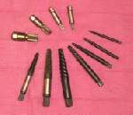
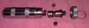

A fastener can fail three ways: the head is rounded off, the thread is seized in the part, or the bolt has snapped. Each needs a different method. Work from the gentlest method to the hardest, and stop when the part is at risk.
Safety
- Wear eye protection. Drilling and hammering throw metal.
- Penetrating oil and brake cleaner burn. Keep sparks and flame away.
- Support the part. A screw in a cast case, brake caliper or cam cap can crack the casting if you hammer or twist too hard.
- Never use these methods on a brake line fitting or a fastener that holds a wheel or the steering on a road bike. Ask a workshop.
You need
- Penetrating oil, impact driver and bits, locking pliers.
- Drill, sharp drill bits, a centre punch and hammer.
- A screw extractor (an "easy out") of the right size for the hole.
- Grinding paste or fine sand, for a worn recess.
Steps
- Clean and soak. Brush the fastener, spray penetrating oil, and leave it for some minutes. Tap the head lightly to help the oil run into the thread. Repeat for a seized fastener.
- Rounded recess in a screw. Put a little grinding paste or fine sand in the recess so the bit grips. Fit a bit that fills it. Try an impact driver: Loosen a tight screw with an impact driver.
- Rounded hex head. Try a slightly smaller 6-point socket tapped on with a hammer, or locking pliers clamped tightly on the head.
- Head sheared off, thread still inside. Punch a centre mark in the middle. Drill a small, straight pilot hole, then a larger one sized for the extractor.
- Extract. Tap the extractor in gently. Turn it anticlockwise slowly with a tap handle. Do not force it.
- If the extractor will not turn, stop. Hardened extractors snap and then cannot be drilled out. Pull it back and try another method.
- Drill out. Enlarge the hole to just under the thread size. Pick out what remains of the thread with a sharp point, then clean the thread with a tap of the correct size.
- If in doubt, drill it out rather than hammer a fragile part. Keep the drill straight and use a centre punch to start.
Check your work
- The thread in the part is clean and a new fastener of the same size turns in by hand.
- No crack in the surrounding part.
If it did not fix the problem
- Thread damaged or hole off-centre: take the part to a workshop for a thread repair insert.
- The fastener holds an important part, such as an engine mount or a brake caliper: Check engine mounting bolts and ask a workshop.